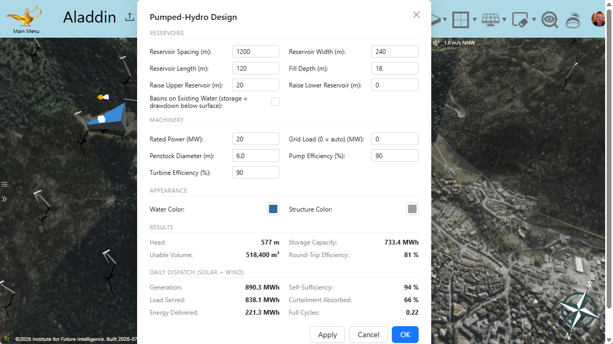
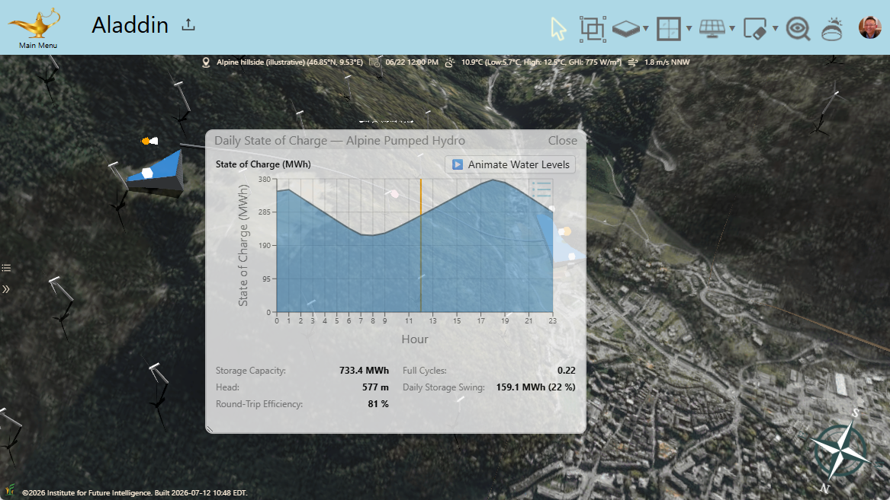

The Mountain Battery
Modeling pumped-hydro energy storage on real terrain in Aladdin
The biggest batteries ever built contain no lithium. They are pairs of lakes on mountainsides, connected by tunnels: when the grid has power to spare, water is pumped from the lower lake to the upper one, and when the grid needs power back, the water falls through turbines and returns it — gigawatts of it, for hours on end. This trick, called pumped-storage hydroelectricity, is more than a century old, and it still accounts for the overwhelming majority of all the grid-scale energy storage on Earth. As solar and wind power grow, so does the value of anything that can soak up their surpluses and give the energy back after sunset or when the wind dies down — and few things do that at scale as well as water and gravity. We have added pumped-hydro storage to Aladdin's growing workbench, where it joins the solar farms and wind farms it exists to serve. Below is a live model — a hypothetical design, though the mountain under it is real: a wind farm on an Alpine ridge with a pumped-hydro plant strung down the slope beside it, and a pair of container battery banks sharing the site, because storage, as we will see, is a team sport. Explore it first, then read on to see what the model actually computes.
The rest of this article walks through the idea and the implementation: why storage is the other half of renewable energy, how you place a plant across a real slope and let the terrain itself set the head, how Aladdin measures the energy a pair of basins can actually hold, how the plant is dispatched hour by hour against the solar and wind generation of your own scene, and how it takes its place on a site-wide grid, in a merit-ordered fleet it shares with batteries, judged over a day or over a whole year.
The other half of renewable energy
Solar and wind power share an inconvenient property: they produce electricity when nature allows, not when people need it. A solar farm floods the grid at noon and vanishes at dinner time; a wind farm can run all night into a grid that is asleep. Without storage, the surplus is curtailed — turbines feathered, inverters throttled, clean energy simply thrown away — while a few hours later the same grid burns fuel to cover the evening peak. Storage closes that gap, and the physics of pumped hydro makes it a natural fit for the job: the energy stored is simply the weight of the water times the height it can fall, E = ρgVh. Because both the volume V and the head h can be enormous — millions of cubic meters, hundreds of meters of drop — a single plant can bank what would take a warehouse of batteries, hold it for hours or days with no self-discharge worth mentioning, and cycle daily for fifty years or more. A modern plant with a reversible pump-turbine returns roughly 70–85% of the energy it swallows, the price of admission being a suitable pair of elevations — which is why these plants live in the mountains, like Nant de Drance in the Swiss Alps, the same range where this article's imagined plant sits.
That coupling to topography is exactly why a generic "storage block" in a design tool is not good enough. How much a pumped-hydro plant can store is not a spec-sheet number; it is a consequence of where you put it — how far apart the basins are, how much drop the slope offers between them, and how much water the ground can actually impound. So Aladdin models the plant the way it models everything else: on the terrain, from the terrain.
A plant is a line drawn across a slope
You create a pumped-hydro plant the same direct way you create anything in Aladdin: drag it out on the ground. The gesture is a line across a hillside — and the two ends of that line become the two reservoirs. Aladdin samples the real elevation of the site (the scene sits on a digital elevation model fetched for the actual latitude and longitude, draped with satellite imagery), and whichever end lands higher becomes the upper reservoir. Each basin is filled to a depth you choose above the lowest natural point under its footprint — and the water finds its own shoreline, flooding the real terrain up to its supply level, so the pool's edge is the contour where the land rises out of the water, exactly as a real reservoir traces the valley that holds it. A penstock — the big pipe that carries the water — runs down the hillside between the pools, hugging the terrain the way real penstocks do, and a powerhouse sits at the lower basin where the pump-turbine would be.
Everything about the plant is parametric. The basin size, the fill depth, the rated power of the pump-turbine, the pump and turbine efficiencies, the penstock diameter — each is a number in the design dialog, and the 3D model and the energy math update together because they are generated from the same description. One parameter deserves a special mention: the reservoir lift. Raising the upper reservoir's water surface above the natural terrain — building a taller embankment dam around it — holds the water higher, which adds both head and storage; raising the lower one does the opposite, shortening the fall. It is the same design lever real projects turn, and in Aladdin you can turn it and watch the stored energy respond — and watch the dam itself appear. Wherever the water's edge would otherwise escape — the downhill rim of a pool perched on a hillside, a shoreline pushed above the natural ground — Aladdin draws the embankment that holds it, crest just above the waterline, running down to the slope below. Where the water simply meets rising ground, no structure is drawn, because none is needed: that is what a shoreline is.

How much energy does a hill hold?
Here is where the terrain earns its keep. Aladdin does not assume each basin is a neat box of water; it integrates the storage over the actual ground. The footprint of each reservoir is swept cell by cell, and every cell contributes the depth of water between the ground surface and the full supply level — the standard stage–storage calculation of reservoir engineering, run against the same elevation data the mountains in the scene are drawn from. The head is read just as directly: it is the difference between the two pools' water-surface elevations, no more and no less. And only water that actually belongs to the pool is counted: the model floods outward from the basin the way water would, so a hollow on the far side of a ridge — below the waterline, perhaps, but in a different valley — is neither painted blue nor credited a single cubic meter.
From there the accounting is honest in a way a single headline number would not be. The water that can actually shuttle between the pools is limited by the smaller of the two usable volumes — an oversized upper basin cannot discharge into a lower basin with nowhere to put the water. That cyclable volume, falling through the head at the turbine's efficiency, gives the deliverable storage capacity in megawatt-hours; dividing by the rated power gives the discharge duration — how many hours the plant can hold the fort at full output. And because pumping uphill and generating downhill each take their cut, the round-trip efficiency is the product of the two: with a typical 90% pump and 90% turbine, about 81% of the energy you bank comes back. All of these figures update live as you drag the plant around the landscape, so hunting for a good site — more drop, more volume, shorter penstock — becomes a hands-on exploration rather than a spreadsheet exercise.
A day in the life of the plant
Capacity is only potential; the interesting question is what the plant does with it over a real day. Aladdin answers with a dispatch simulation that connects the storage to everything else in the scene. Run the daily yield analysis on your solar arrays — the same hour-by-hour simulation Aladdin uses everywhere — while the wind side the panels fetch for themselves, hour by hour from the site's typical-meteorological-year weather; the pumped-hydro panels aggregate all of it into a single 24-hour generation profile. Against that profile the plant serves a flat target load: by default the day's average generation, which poses the purest version of the storage problem — can this plant turn a spiky renewable feed into steady baseload?
The dispatch then marches through the day hour by hour. Whenever generation exceeds the load, the surplus drives the pump and water moves uphill, subject to the rated power of the machine and the room left in the upper basin; whenever generation falls short, water falls back through the turbine to cover the deficit, subject to the same power limit and to the water actually available. What the storage cannot capture is curtailed; what it cannot cover goes unserved. Two panels chart the result: Daily Power Flows plots generation, load, pumping, and generating together, and Daily State of Charge traces the stored energy through the day — filling through the windy or sunny hours, draining through the lulls. The 3D model participates too: the water levels in the two pools rise and fall with the state of charge, so you can literally watch the plant breathe.

The summary numbers the panels report are the ones that matter in the energy-transition debate, made concrete on your own design. Self-sufficiency: what fraction of the day's load was met by the renewables plus the storage, without help from the grid. Curtailment absorbed: what fraction of the surplus that would otherwise have been wasted the plant managed to bank. Equivalent full cycles: how hard the day worked the storage — a plant that barely cycles is oversized capital, one that slams between empty and full every day is undersized. Change the fill depth, the rated power, or simply where the plant sits on the mountain, and every one of these figures answers immediately.
Storage is a team sport: the site grid
A real site rarely bets on a single kind of storage. Batteries answer instantly and cost dearly per kilowatt-hour; a reservoir is slow-marching bulk that costs almost nothing to enlarge. Hybrid plants pair them for exactly that reason — and Aladdin models batteries too, container banks you can drop beside a rooftop array or a utility-scale farm. But the moment a scene holds both kinds of storage, a bookkeeping problem appears: each device's own analysis dispatches it against the whole scene's generation, so the battery simulation banks the noon surplus and the pumped-hydro dispatch banks the same surplus again. That is the right lens for sizing one device, and the wrong one for judging a site — the same kilowatt-hour cannot be stored twice.
The site grid is Aladdin's answer: a virtual bus that ties the whole scene into one hourly energy balance. Every solar panel and every wind turbine generates onto the bus, and every storage unit serves it in merit order — batteries respond first, the fast shock absorbers; pumped hydro follows, the tank behind them. Each hour, surplus charges the fleet in order until power ratings and remaining capacity say no, deficit discharges it the same way, and nothing is counted twice. What no unit can absorb is curtailed and sold to the outside grid at the export price; what no unit can cover is imported at the import price — typically several times higher, the asymmetry that is the economic argument for storage in the first place — so the panel prices a design's imperfections in dollars as well as megawatt-hours. And if the scene contains buildings, the load is no longer an abstraction: the hour-by-hour heating and cooling electricity from Aladdin's building simulation rides on the bus alongside whatever flat site load you set.
The site grid keeps the two rhythms of every Aladdin analysis, daily and yearly. The daily view dispatches one representative day, charted hour by hour with the state of charge of every unit on its own curve. The yearly view refuses the tempting shortcut: monthly energy totals cannot drive a dispatch, because storage lives and dies by when the energy arrives, not how much of it a month delivers. So it dispatches a representative day of every month with real hourly shapes — the yearly solar analysis records each month's hour-by-hour profile as it runs, and the wind is each month's mean diurnal profile, every hour of the year passed through the same wake model as the daily analysis — and then rolls the months up into annual answers: how much the site generated, curtailed, and left unserved; how self-sufficient it was across the seasons; what the grid connection cost for the year; and how many full cycles each unit worked, the number that says whether the capital was worth deploying.
Storage turns a wind farm into a power plant
The live model at the top of this article puts the pieces together. To be clear, none of it exists: the terrain is real, but the plant is imagined — which is the point, since this is design, not documentation. Fifty wind turbines stand along a ridge in the Alps — a site chosen the way real ones are, for its wind and its relief — a pumped-hydro plant runs down the slope beside them, its upper basin raised a further twenty meters by an embankment for extra head, and two battery banks wait on a pad below the ridge. Wind is the least punctual of the renewables: it surges and lulls on its own schedule, day and night. Open the pumped-hydro panels and you can watch the plant do its quiet work — swallowing the gusty surpluses, covering the calms, and handing the grid something it can actually plan around. Then open the site grid (Analysis › Site Grid) and watch the same day played as a team: the batteries take the first swing at every surplus and every deficit, the reservoir carries the bulk behind them, and the panel puts numbers — and dollars — on whatever slips through. The yearly view answers the question the daily one cannot: whether January agrees with June. The same experiment works with a solar farm, where the rhythm is the familiar noon mountain and evening cliff, or with both at once, since the site grid pools the surplus of everything you build.
Conclusion
Pumped hydro is the rare technology that is at once ancient and indispensable to the future: gravity, water, and a hole in a mountain, holding up grids that grow more solar- and wind-powered every year. Designing one is inseparable from the land it sits on, which is what makes it such a good fit for Aladdin's way of working — draw the plant on the real terrain, let the elevation data set the head, integrate the storage over the actual ground, and dispatch it — alone, or in a merit-ordered fleet with batteries on the site grid — against the renewables you designed in the same scene, all in a web browser with nothing to install. And because it runs in the browser, a design is a link away from a classroom, a colleague, or a community meeting — a shared, explorable answer to the question every renewable-energy plan eventually faces: where does the energy go when the sun sets and the wind stops?
← Back to Aladdin